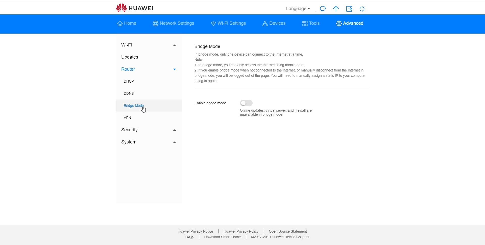

Super

Hallo,
könnt ihr mir da weiterhelfen bitte. Ein Kunde von mir hat einen Magneta Business Vertrag mit einer fixen IP Adresse bestellt.
Nun hat er nur eine IPv6 Adresse erhalten, da er jedoch auch Remote auf sein Netzwerk zugreifen will und auch ich dieses Warten will, wie könnte er das mit einer VPN Lösung machen. Da er ja bei den meisten externen Anschlüssen nur eine IPv4 Adresse erhält.
Gibt es bei Magneta, Dual Stack oder kann Ich das anders bewerkstelligen?
Danke
Hallo @Hirsnik
Sollte hier niemand Rat wissen, kontaktiere bitte die Magenta Business Serviceline 0676 20 333
24 Stunden täglich, 7 Tage die Woche.
Kann ich leider auch nichts dazu sagen. Da müssen Spezialisten ran. --> Hotline
Danke an euch zwei,
werde mal den Support anfragen,
LG
Bruno
Alles klar.
Evtl. hältst uns am Laufenden. Würde mich interessieren, wie da die Lösung aussehen kann.
Danke!
Danke an euch zwei,
wird auf IPv4 umgestellt.
Danke und LG
Bruno
Passt! Sollte dann einfacher sein.
LG
Christian
Super

Eine Frage noch die Ihr eventuell sofort beantworten könnt.
Wenn ich den Business Anschluss auf Routing umstelle geht das das WLAN noch?
Firewall wir selbstverständlich installiert!
Danke
Bruno
Was meinst du genau?
Hab die Frage nicht ganz verstanden.
Der Kunde hat wie gesagt einen Business Internet Anschluss mit WLAN.
Da ich eine eigenen Firewall installiere, möchte ich den Anschluss auf transparent umschalten lassen.
Keine Ahnung wie das bei Magenta heißt, beim Mitbewerb wird auf Routing umgeschaltet.
So geht das halt bei einem Mitbewerber, dann hast von extern die IP Adresse (offizielle IP Adresse) direkt auf der Firewall und kannst alles selbst managen.
Aber wenn das dort umgeschaltet wird, kann man den WLAN Netzwerk des Provider Routers, nicht mehr Nutzen und muss ein WLAN selbst installieren.
Danke
Bruno
Bearbeitet von HirsnikSorry. Gut erklärt aber da muss ich wieder passen. Hoffe es findet sich jemand anderer für eine Antwort.
Kein Problem,
danke für deine Mühe.
ich hoffe du bekommst von Magenta das ersetzt!
Kein Problem.
Wie helfen hier gerne auf Basis User hilft User. Leider klappt es halt nicht immer aber man macht es ja gerne.
Schönen Abend noch...
LG Christian
vor 1 Stunde schrieb Hirsnik:Wenn ich den Business Anschluss auf Routing umstelle geht das das WLAN noch?
Sofern es sich um einen Coax-Kabel Anschluss handelt, nein, das W-Lan geht nur im NAT/Routing Modus.
Danke für die Antwort,
Sorry nicht angegeben, nein ist kein Kabel Anschluss, sondern mit Sim (Mobile Internet).
vor 14 Minuten schrieb Hirsnik:Danke für die Antwort,
Sorry nicht angegeben, nein ist kein Kabel Anschluss, sondern mit Sim (Mobile Internet).
Was für einen Router ist da im Einsatz?
Bin jetzt nicht vor Ort aber glaube:
Internet Flex Router 535s
geht das mit dem oder muss der gewechselt werden?
Danke
Magenta tendiert dazu keinen Bridge Mode bei dem Mobilfunkroutern zu haben.
Die nicht Magenta Versionen des Huawei B535 hätten einen Bridge-Mode.
Stimmt mein Router von Magenta hat diese Funktion auch nicht. B525.
Danke
für die Info, warum sagen Sie das man keinen Bridge Modus verwenden soll?
Scheinbar kann der Originale auch keinen Bidge Modus:
Frage bei A,,,, und Antwort scheinbar von Huawei:
Das "pro" ist ein indiz das der router keinen bridge mode hat?
A: Hallo lieber Kunde,
der Router B535-232 unterstützt den Bridge Mode leider nicht. Bei weiteren Fragen kannst Du uns natürlich jederzeit kontaktieren. Du erreichst uns über unsere Servicehotline, mit einem Schreiben per Mail, oder via Online-Chat.
Beste Grüße,
Dein HUAWEI Customer Service Team
Von Huawei Customer Service am 16. April 2020
Kennt wer einen der einen Bridge Modus unterstützt?
Danke
Bearbeitet von Hirsnikvor einer Stunde schrieb Hirsnik:Danke
für die Info, warum sagen Sie das man keinen Bridge Modus verwenden soll?
Wer sagt, dass man keinen Bridge Mode verwenden soll?
vor einer Stunde schrieb Hirsnik:Scheinbar kann der Originale auch keinen Bidge Modus:
Frage bei A,,,, und Antwort scheinbar von Huawei:
Das "pro" ist ein indiz das der router keinen bridge mode hat?
A: Hallo lieber Kunde,
der Router B535-232 unterstützt den Bridge Mode leider nicht. Bei weiteren Fragen kannst Du uns natürlich jederzeit kontaktieren. Du erreichst uns über unsere Servicehotline, mit einem Schreiben per Mail, oder via Online-Chat.
Beste Grüße,
Dein HUAWEI Customer Service Team
Von Huawei Customer Service am 16. April 2020
Ja, die Auskunft ist leider Mist. Den einzigen Reim, den ich mir darauf machen kann ist, weil das Listing mit anderen Produkten ohne Bridge Mode geteilt ist, hat der Huawei Service Angestellte da einfach dasselbe für den B535 angenommen.
Ein Bild von einer Rezission auf A.... wo klar der Bridge Mode des B535 ohne Branding zu sehen ist: 
vor 1 Stunde schrieb Hirsnik:Kennt wer einen der einen Bridge Modus unterstützt?
Eben der B535 (4G Cat 7) oder B818 (4G Cat 18) von Hauwei.
Es gäbe auch die Netgear Nighthawk M1 (4G Cat 16), M2 (4G Cat 20) & M5 (4G Cat 22 & 5G) Router. Das wären allesamt mobile Router mit Lan Port.
Von Zyxel gäbe es ein paar Outdoor Modems: LTE7460-M608 (4G Cat 6), LTE7480-M804 (4G Cat 12), LTE7490-M904 (4G Cat 18), NR7101 (4G Cat 20 & 5G)
Wenn es an dem Standort LTE-Advanced gibt, dann zumindest ein Gerät mit zumindest 4G Cat 6, besser mit zumindest 4G Cat 9 und am besten mit 4G Cat 16.